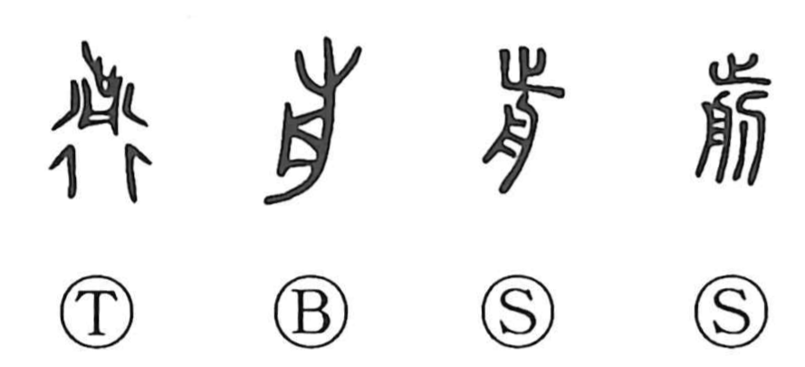

Explanation
前's older formation joins 止, a foot, with 舟, here a washing basin, and in some forms 刀, a knife. It depicts washing the feet and trimming the toenails. The received 月-like part comes from the basin shape.
Cutting the nails was a rite of purification, performed before departure or upon return. An account of the Duke of Zhou describes his cutting his nails and sinking them in a river, giving the bodily offering a sacrificial force. Related funerary customs also included cutting nails and hair.
前 retains cutting in its relationship with 剪 and 揃. It also names what is in front, advancing, and going ahead. From spatial precedence come before, beforehand, formerly, and the past. The ritual preparation provides the setting for setting out.